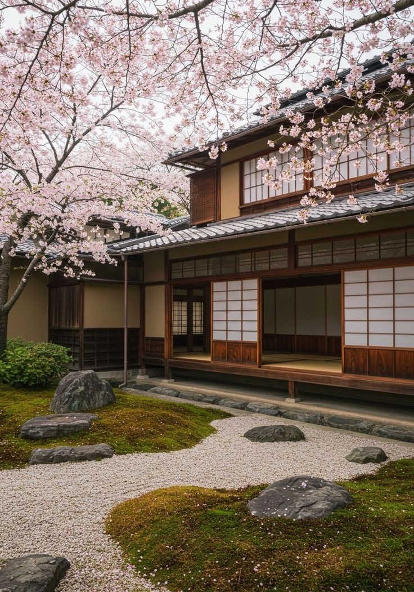

CHAPTER 01
為了抗衡AFO而生的家族，心崎家族，自古以來便擁有強大的心靈控制個性，並世代與AFO（All For One）抗衡。
其力量之強大，曾在鼎盛時期擁有毀天滅地的能力，令AFO也無法將其徹底剷除。然而，正因這份無可匹敵的力量，心崎家族遭受了AFO的詛咒—「盛極必衰·劫禍」。
為了防止家族再次誕生能對抗AFO的強大力量被AFO盯上、更怕觸發詛咒，心崎家族立下嚴格的禁令：
禁止後代與擁有永遠「個性」的對象通婚。這一禁令使家族的血脈逐漸衰微，能力也逐漸稀薄。
為了保護心崎透，根津抹除了心崎家族的所有資料，使其徹底從歷史中消失。另一方面，AFO將心崎家族視為無法抹去的恥辱，因此絕口不提。
心崎家族自此消失於歷史。
